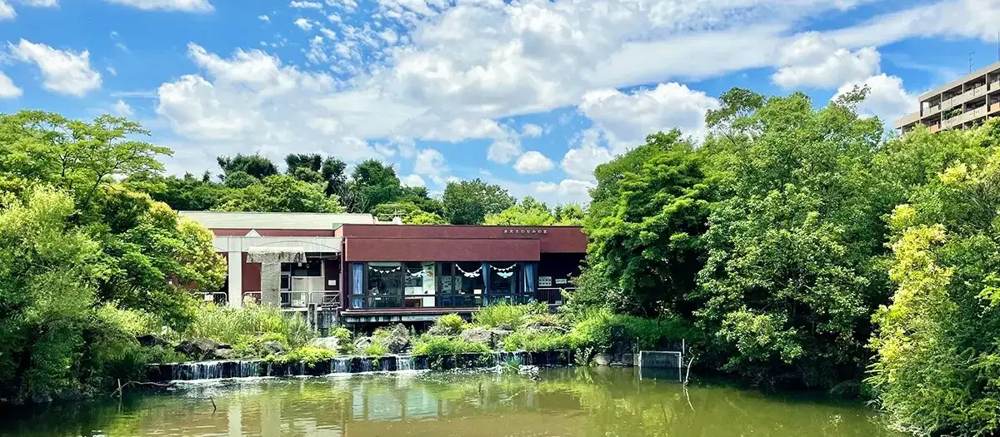
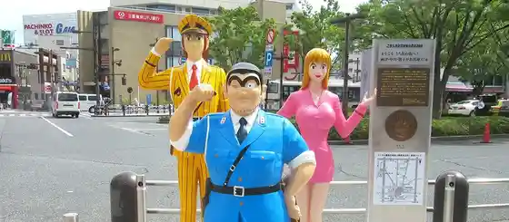
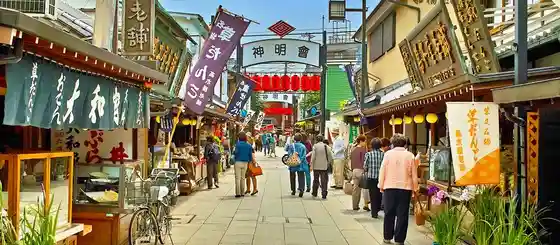
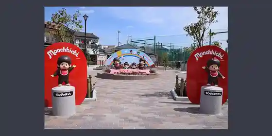
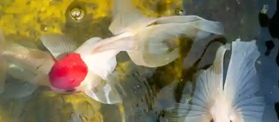

Katsushika, Tokyo: things to do, food and stays
Katsushika · Tokyo
Katsushika
Highlighted on the Tokyo map.

Sights
Mizumoto Kawasemi Village
Kochi Kame Dozo

Taishaku Ten Sando

Monchitchi Park

Katsushika Kingyo Tenjijo

Katsushika Kyodo to Tenmon no Museum
Kameari Katori Shrine
Mizumoto Park
Katsushika Shibamata Torasan Memorial Museum
Horikiri Shobuen
Taishaku Ten Dai Kei Tera
Yamada Yoji Museum
Katsushika Yamamoto Tei
Tokyo Natural Hot Spring Kodai Baths
Dining
Yakiniku Kosen
焼肉幸泉

Meat restaurant in Katsushika, Tokyo.
Unagi Uomasa Reservation
うなぎ 魚政

Seafood restaurant in Katsushika, Tokyo.
Tsukemen Michi
つけ麺 道

Noodle restaurant in Katsushika, Tokyo.
Kamodashi Chuka Soba Menya yoshiki
鴨出汁中華蕎麦 麺屋yoshiki

Noodle restaurant in Katsushika, Tokyo.
Ramen Miura Ya
ラーメン 三浦家

Noodle restaurant in Katsushika, Tokyo.
Ramen Club Totonoe
ramen club トトノエ

Noodle restaurant in Katsushika, Tokyo.
Ishii
い志い

Sweets and bakery shop in Katsushika, Tokyo.
Takagiya Roho
高木屋老舗

Sweets and bakery shop in Katsushika, Tokyo.
Yoshinoya
吉野家

Sweets and bakery shop in Katsushika, Tokyo.
Uchida
宇ち多゛

Izakaya or bar in Katsushika, Tokyo.
Ramen Tourou
ラーメン燈郎

Noodle restaurant in Katsushika, Tokyo.
Ichijo Ryu Ganko Ramen Kanamachi
一条流がんこラーメン 金町

Noodle restaurant in Katsushika, Tokyo.
Tonkotsu Miura
とんこつ みうら

Noodle restaurant in Katsushika, Tokyo.
Tori Sami
鳥さみ

Meat restaurant in Katsushika, Tokyo.
Ra Rozu Japone
ラ・ローズ・ジャポネ

Cafe in Katsushika, Tokyo.
Shozan
賞讃

Noodle restaurant in Katsushika, Tokyo.
Hi-Fat Noodle BUTCHER’S

Noodle restaurant in Katsushika, Tokyo.
RYOKUSAI
仙臺自家製麺こいけ屋 分店 綠栽

Noodle restaurant in Katsushika, Tokyo.
Okamoto Monogatari
オカモトモノガタリ

Noodle restaurant in Katsushika, Tokyo.
Tsukemen Itteki
つけ麺 一滴

Noodle restaurant in Katsushika, Tokyo.
Nonki
のんき

Restaurant in Katsushika, Tokyo.
Menya Shinko
麺屋 神工

Noodle restaurant in Katsushika, Tokyo.
Nishi Kameari Gallery Reservation
西亀有 ギャラリー

Chinese or Asian restaurant in Katsushika, Tokyo.
machico Reservation
焼鳥 町子

Meat restaurant in Katsushika, Tokyo.
Taisei
たいせい

Noodle restaurant in Katsushika, Tokyo.
Mendo Rokuzen
麺道六善

Noodle restaurant in Katsushika, Tokyo.
Chuka Soba Ibuki
中華そば 一颯

Noodle restaurant in Katsushika, Tokyo.
Sobakiri Nichiyouan
そばきり 日曜庵

Noodle restaurant in Katsushika, Tokyo.
Ramen Benkei Horikiri
らーめん弁慶 堀切店

Noodle restaurant in Katsushika, Tokyo.
Yotsugi Seimenjo
四ツ木製麺所

Noodle restaurant in Katsushika, Tokyo.
Ramen Kinpeki
Ramen金碧

Noodle restaurant in Katsushika, Tokyo.
Jikaseimen Susurankai
自家製麺 啜乱会

Noodle restaurant in Katsushika, Tokyo.
Biscuit
ビスキュイ

Sweets and bakery shop in Katsushika, Tokyo.
Takeshi
たけし

Meat restaurant in Katsushika, Tokyo.
Kaizan Shinkoiwa ten
かいざん 新小岩店

Noodle restaurant in Katsushika, Tokyo.
Yakibuta Ramen Sanjo Katsushika ten
焼豚ラーメン 三條 葛飾店

Noodle restaurant in Katsushika, Tokyo.